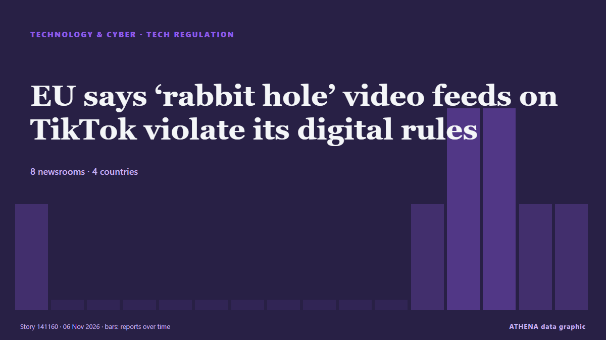

Технологии, ИИ и кибербезопасность
СпонсорПри поддержке  Cybernetics and Artificial Intelligence Lab Welcome to the Cybernetics and Artificial Intelligence Laboratory, established at the Department of Business Administration of the National and Kapodistrian University of Athens. The lab is headed by Professor Dimitrios Thomakos. The lab aims to do research that can be published in top venues. Our research uses tools and methods of Artificial Intelligence, and lies in the following areas: - Forecasting - Decision making - Cyber security - Finance We are always looking forward to collaborating with exceptional students!
Cybernetics and Artificial Intelligence Lab Welcome to the Cybernetics and Artificial Intelligence Laboratory, established at the Department of Business Administration of the National and Kapodistrian University of Athens. The lab is headed by Professor Dimitrios Thomakos. The lab aims to do research that can be published in top venues. Our research uses tools and methods of Artificial Intelligence, and lies in the following areas: - Forecasting - Decision making - Cyber security - Finance We are always looking forward to collaborating with exceptional students!
Заголовки приводятся на английском языке, как они были опубликованы.

Регулирование технологийEU says ‘rabbit hole’ video feeds on TikTok violate its digital rules
TikTok will have a chance to respond to the preliminary findings before the European Commission issues its final decision. из The Irish News (Belfast)
| 24 окт. | 21 |
|---|---|
| 25 окт. | 26 |
| 26 окт. | 78 |
| 27 окт. | 84 |
| 28 окт. | 88 |
| 29 окт. | 89 |
| 30 окт. | 80 |
| 31 окт. | 34 |
| 1 нояб. | 47 |
| 2 нояб. | 111 |
| 3 нояб. | 100 |
| 4 нояб. | 95 |
| 5 нояб. | 95 |
| 6 нояб. | 21 |
Google turns off AI for schoolchildren by default
Google has said it will switch off its AI tools for schoolchildren by default, after drawing criticism for pushing artificial intelligence features to students while schools are still debating how… из Vanguard
US lawmakers request briefing with Nvidia's Jensen Huang on dealings with Megaspeed executive
Nvidia CEO Jensen Huang warned that Europe risks falling further behind the US and China in artificial intelligence, despite its industrial base and technical talent. из DigiTimes Asia
600,000 Nvidia Chips Pile Up in Hong Kong Awaiting China’s Import Approval
About 600,000 Nvidia H200 artificial intelligence chips remain stored in Hong Kong, awaiting shipment to mainland China as Beijing has yet to approve large-scale imports despite strong demand from… из Colombia One
Ukraine Seeks New Contract for Starshield Amid Connectivity Challenges
Despite the still unexplained speed limitations imposed on Ukraine by the Starshield satellite network last month, Kyiv is pushing for renewal of the agreement with the US government due to expire in… из Kyiv Post
3 Charged in Scheme to Use AI to Impersonate CEOs and Attorneys to Steal $129 Million
Three people accused of using artificial intelligence to impersonate corporate executives and attorneys to steal about $129 million have been indicted on charges of wire fraud and aggravated identity… из The Canadian Press (via CityNews)
China blocks SoftBank's $5.4bn deal for ABB robotics division
The block adds a regulatory overhang to SoftBank on a day the shares were already under pressure from Arm and the AI selloff, and uncertainty over whether a fresh application is viable may keep that… из investingLive (ForexLive)
US warns of 'ongoing cyber threat' to industrial refrigeration systems
Urges industrial refrigeration control system operators to apply software updates, pull devices off public internet. из Express Tribune
Airbnb is working on an AI travel agent
Airbnb plans to roll out an AI agent in the first half of 2027 that will help users plan and book travel, the company said in its Q3 2026 earnings shareholder letter released today. из The Verge
US voters back data center restrictions amid backlash over artificial intelligence expansion
Local bans, development limits gain support as new Democratic governors in Texas, Georgia pledge tougher oversight. из Anadolu Agency (English)
Tencent launches Hy4 model to boost visual reasoning, AI safety
Tencent has launched its next-generation artificial intelligence (AI) model, Hy4, adding visual understanding for the first time and limiting cybersecurity training data to reduce the risk of misuse… из DigiTimes Asia
AI sharpens cat-and-mouse hacking battle as companies strengthen defences
From hacked supermarket fridges and a record cryptocurrency theft at Binance to an emergency over flaws in widely used web software, companies worldwide are facing a wave of cyber threats executives… из Tuoi Tre News
Texas data centers face uncertain future after Hinojosa wins governor’s race
Texas governor-elect Gina Hinojosa has rattled the state's data center industry with a campaign pledge to halt new projects, injecting new uncertainty into one of the country's fastest-growing… из Korea Herald
Salon is shutting down after 31 years
Salon launched 31 years ago as one of the first online-only news magazine outlets, and it announced today in an unsigned post that it's ceasing publication. из The Verge
Channel 4 axes Married At First Sight UK after review following misconduct claims
Channel 4 chief executive Priya Dogra also confirmed season six of the show, which was filmed earlier this year, would not be broadcast. из The Irish News (Belfast)
Apple spyware alerts reach German MPs and journalists in 99 countries
Germany’s cybersecurity agency has told lawmakers who got Apple’s spyware warnings to treat their iPhones as possibly compromised. из The Next Web
Jack Grealish agreement reached as Everton manager David Moyes told what to do
Jack Grealish has missed the last three Everton games after breaching club discipline and David Moyes has been told how to deal with the winger. из Liverpool Echo
Was Elon Musk the US midterms' biggest loser? – Stateside with Kai and Carter
The tech industry spent big on the midterms, but it turned out to be a poor investment. из Guardian Business
Musk’s Tesla, SpaceX slide as Democrats take control of Congress
Tesla shares drop 2.6% and SpaceX slides 2.1% in early trading as Musk-backed Republicans lose Texas Senate and governor’s races. из Anadolu Agency (English)
S. Korea posts record high current account surplus of over US$60 bln in Sept. on chip supercycle
SEOUL, Nov. 5 (Yonhap) -- South Korea posted an all-time high current account su... из Yonhap (English)
Hackers target French blood bank refrigeration
Greece's National Cybersecurity Authority urges businesses to strengthen their digital defences following new attacks on fridge and freezer systems. из to vima
Disinformation threatens trust in election results: Researcher
Research has shown that disinformation is threatening trust in election results, and not just voter. из SABC News
National Blood Centre says raise guard after France cyber attacks on blood banks
(ANSA) - ROME, 04 NOV - Italy's National Blood Centre on Wednesday called on Italian blood banks to raise their level of vigilance following cyber attacks in France that targeted the refrigeration… из ANSA English
Hackers use n-day exploits in zero-click attacks on iOS, Android devices
A large-scale watering hole attack associated with Russian hackers has been targeting iOS and Android users visiting compromised sites or fake ones impersonating legitimate portals. из BleepingComputer
Marvell to buy Lumentum in $115 billion all-stock deal
Marvell has agreed to acquire Lumentum for $115 billion, combining its optical DSPs, SerDes, silicon photonics, and networking silicon with Lumentum’s lasers, transceivers, optical switches, and InP… из Tom's Hardware
Israel's detention of Abou Shhadeh 'a campaign to silence'
Israeli forces detained Palestinian journalist Abed Abu Shehadeh over an interview with Azmi Bishara, as threats against Arab political leaders intensified. из The New Arab
Democrats Prepare Musk Probe Over Satellite Cuts
Senate Democrats have asked Elon Musk to preserve documents concerning the slowdown of Starshield in Ukraine, CNN reported. из Kyiv Post
SpaceX is working with Qualcomm to build its Starlink Mobile 5G network
SpaceX is teaming up with Qualcomm to build out its nationwide mobile network. из The Verge
Qualcomm’s smartphone chip sales miss estimates, shares fall
Adjusted sales in Q4 fell 7% to US$10.44 billion, beating estimates of US$10.11 billion. из The Business Times
‘Godfather of AI’ Warns of ‘Chernobyl-Like’ AI Crisis Soon
Geoffrey Hinton, a Nobel Prize-winning computer scientist widely regarded as one of the pioneers of artificial intelligence, has warned that AI could trigger a Chernobyl-like crisis in the near… из Khaama Press
Nasa's 22-year-old Swift satellite telescope falls from orbit in fiery finale
WASHINGTON: Nasa’s Swift satellite telescope, which spent two decades studying the most powerful known blasts of energy in the cosmos, tumbled out of orbit as expected on Wednesday and burned up in… из New Straits Times
NASA's Swift space telescope plunges back to Earth in fiery demise
NASA's Swift orbital observatory fell back to Earth after running its mission for more than two decades. из DW English
Chainalysis discloses data breach from "offensive agentic techniques"
Blockchain analytics firm Chainalysis disclosed a data breach after attackers used "offensive agentic techniques" to access internal systems and tools, exposing customer names, email addresses, user… из BleepingComputer
Missed calls puzzle Telstra customers
Telstra says a hack or cyber breach is not to blame for customers receiving mystery missed calls. из Sydney Morning Herald
British adventurer Karl Bushby completes 28-year walk around the world
On November 2, Karl Bushby finished his 28-year walk back to his English hometown of Hull. из NBC News (World)